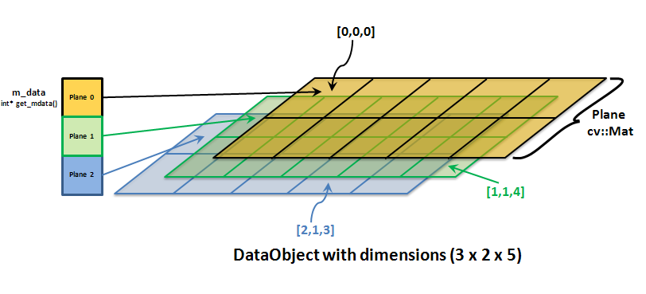

The class DataObject (part of the library dataObject) provides a n-dimensional matrix that is used both in the core of itom as well as in any plugins. The n-dimensional matrix can have different element types. These types and their often used enumeration value are defined in the file typeDefs.h and are as follows.
| Typedef | Enumeration | Description |
|---|---|---|
| ito::int8 | ito::tInt8 | 8bit, signed, fixed point |
| ito::uint8 | ito::tUint8 | 8bit, unsigned, fixed point |
| ito::int16 | ito::tInt16 | 16bit, signed, fixed point |
| ito::uint16 | ito::tUint16 | 16bit, unsigned, fixed point |
| ito::int32 | ito::tInt32 | 32bit, signed, fixed point |
| ito::uint32 | ito::tUint32 | 32bit, unsigned, fixed point |
| ito::float32 | ito::tFloat32 | 32bit, single-precision floating point |
| ito::float64 | ito::tFloat64 | 64bit, double-precision floating point |
| ito::complex64 | ito::tComplex64 | real and imaginary part is float32 each |
| ito::complex128 | ito::tComplex128 | real and imaginary part is float64 each |
The last two dimensions of each dataObject are denoted plane and physically correspond to images. In order to also handle huge matrices in memory, The entire matrix is divided into planes, where each plane can be allocated at arbitrary positions and memory and is of type cv::Mat_<type>, derived from cv::Mat of the OpenCV library. Therefore every plane can be used with every operator given by the OpenCV-framework (version 2.3.1 or higher). If available, the first (n-2) are allocated as one vector of pointers, each pointing to its corresponding plane. This kind of dataObject and its way of allocating memory is called unorganized.
In order to make the dataObject compatible to matrices that are allocated in one huge memory block (like Numpy arrays), it is also possible to make any dataObject continuous. Then, a huge data block is allocated, such that all planes lie consecutively in memory. Nevertheless, the pointer-tree is still available, pointing to the starting points of all planes. This reallocation is implicitely done, when creating a Numpy-array from a dataObject.
DataObject can be declared in different possible ways with different dimensions and different data types. Various possible implementations of declaring DataObject are listed below.
Let’s take an example of a data object with a dimensions 3x2x5. It can be imagined as shown in the figure below.
As we can see in this figure, each plane is of a type cv::Mat class from openCV library which we know. m_data corresponds to the zero-based two-dimensional matrix-index for a perticular plane. This matrix-index can be retrieved using seekMat() method and later on with the use of get_mdata() method, we can have the matrix pointer of the whole plane. The return type of get_mdata() method is int* which can be type-casted by cv:Mat* easily. Please read the section Direct Access to the underlying cv::Mat to understand this concept in detail with a working example.
Following are some sample codes to get one quickly understand basic programing structure of Data Objects.
itom
The following code creates empty data object with no dimensions (0) and no type (0).
1 2 3 4 | ito::DataObject d0;
std::cout << "empty data object: \n";
std::cout << " dimensions: " << d0.getDims() << "\n";
std::cout << " type: " << d0.getType() << "\n" << std::endl;
|
Note
Here getDims() method returns the dimensions of data object d0, whereas getType() method returns the type of d0.
Now, lets take an example of creating a two dimensional data object.
The following code creates such 2 dimensional data object of dimensions Y=2, X=5 and of type float32.
1 2 3 4 5 6 7 | ito::DataObject d1(2,5, ito::tFloat32);
std::cout << "2x5 data object, float32: \n";
std::cout << " dimensions: " << d1.getDims() << "\n";
std::cout << " type: " << d1.getType() << "\n";
std::cout << " size: " << d1.getSize(0) << " x " << d1.getSize(1) << "\n";
std::cout << " total: " << d1.getTotal() << "\n";
std::cout << d1 << std::endl;
|
Note
Here, getSize() method returns the size of each dimension of a data object d1. getDims() method returns the number of dimensions of d1. getType() method returns the type of d1. getTotal() method returns total number of elements in d1.
Now, we know how to create a data object, so lets have a look at how can one address the elements of a data object. Sometimes it is necessary to read or set single values in one matrix, sometimes one want to access all elements in the matrix or a certain subregion. Therefore, the addressing can be done in one of the following ways:
1 2 3 | ito::DataObject d1(2,5, ito::tFloat32);
d1.at<ito::float32>(0,1) = 5.2;
std::cout << "d1(0,1) = " << d1.at<ito::float32>(0,1) << "\n" << std::endl;
|
Here, the addressing is done by the method at() under the class ito::DataObject, which is pretty similar to the same method under the OpenCV class cv::Mat. The at() method can either be used to get the value at a certain position or to set value at that position in a data object. There are special implementations of at() for addressing values in a two- or three-dimensional data object, where the first argument always is the z-index (3D), followed by the y-index and the x-index. All indices are zero-based, hence the first element can be referred by addressing 0th position in every dimension.
Note
The at() method is templated where the template parameter must correspond to the type of the corresponding data object.
Let’s try to summerize some pros and cons of this method.
When one needs to iterate through certain region of a data object, then the previous method of accessing a data object using at method seems quite insufficient. In such case, one can define a row pointer for each row in matrix and work with row pointer to address elements of a data object in a following way.
1 2 3 4 5 6 7 8 9 10 11 12 13 14 15 | ito::DataObject d1(3,5, ito::tInt16);
size_t planeID = d1.seekMat(0); //get internal plane number for the first plane
ito::int16 *rowPtr = (ito::int16*)d1.rowPtr(planeID,0);
size_t height = d1.getSize(0);
size_t width = d1.getSize(1);
for(size_t m = 0 ; m< height ; m++)
{
rowPtr = (ito::int16*)d1.rowPtr(planeID,m);
std::cout << "Row " << m << ":";
for(size_t n=0 ; n < width; n++)
{
rowPtr[n] = m; //accessing each element of data object with row pointer
}
}
std::cout << d1 << std::endl;
|
Here, seekMat() method gets the internal plane number of the 1st plane in line #2. In line #3, dynamic array rowPtr is defined as row pointer to the 0th plane of the data object d1. Now accessing each element of row pointer will access each element of the data object in that row.
To use this row pointer method for data objects more than 2 dimensions, following code can be used.
1 2 3 4 5 6 7 8 9 10 11 12 13 14 15 16 17 18 19 20 21 22 23 24 25 26 | ito::int16 *rowPtr1= NULL;
int dim1 = d1.getSize(0);
int dim2 = d1.getSize(1);
int dim3 = d1.getSize(2);
int dim4 = d1.getSize(3);
int dim5 = d1.getSize(4);
size_t dataIdx = 0;
for(int i=0; i<dim1; i++)
{
for(int j=0; j<dim2;j++)
{
for(int k=0; k<dim3;k++)
{
dataIdx = i*(dim2*dim3) + j*dim3 + k;
for(int l=0; l<dim4;l++)
{
rowPtr1= (TypeParam*)d1.rowPtr(dataIdx,l);
for(int m=0; m<dim5;m++)
{
//Assigning unique value to each element of d1.
rowPtr1[m] = cv::saturate_cast<TypeParam>(calcUniqueValue5D(i,j,k,l,m));
}
}
}
}
}
|
Note
Here dataIdx represents the number of the plane in the matrix. The formula in line #14 assigns a non repeating increasing value to dataIdx such that each plane of the data object can be pointed out without any overlapping.
Some advantages and disadvantages of using this method are given in the section below.
One can assign a single value to all elements of a data object using assignment operator “=” in the following way. Here we will also have a look on how to declare a 5 dimensional data object and assign a single floating point value to each element of the data object.
1 2 3 4 5 6 7 8 9 10 | size_t *temp_size = new size_t[5];
temp_size[0] = 10;
temp_size[1] = 12;
temp_size[2] = 16;
temp_size[3] = 18;
temp_size[4] = 10;
ito::DataObject d1 = ito::DataObject(5,temp_size,ito::tFloat32);
d1 = 3.7;
std::cout << d1 << std::endl;
delete[] temp_size;
|
Here line #7 uses implementation #4 for declaring 5 dimensional data object d1.
In some cases, one needs to assign values of elements of a data objects based on some portion of another data object. This can be done by using this method of accessing the underlying matrix (cv::Mat) of a data object directly. Following example shows the method to access underlying planes in multidimensional matrices.
1 2 3 4 5 6 7 8 9 10 11 12 13 14 15 16 | // 4 x 5 x 3 DataObject, int16
ito::DataObject d4(4,5,3,ito::tInt16);
std::cout << "DataObject (4x5x3), int16 \n" << std::endl;
d4 = 3; //assign value 3 to all elements
//access to the third plane (index 2)
planeID = d4.seekMat(2);
cv::Mat *plane3 = (cv::Mat*)d4.get_mdata()[planeID];
std::cout << "OpenCV plane" << std::endl;
std::cout << *plane3 << std::endl;
//accessing second line in plane3
ito::int16* rowPtr2 = (ito::int16*)plane3->ptr(1);
//regions of interest
//d5 = d4[1:3,0:2,:]
ito::Range ranges[3] = { ito::Range(1,3), ito::Range(0,2), ito::Range::all() };
ito::DataObject d5 = d4.at(ranges);
d5 = 7;
|
Let’s try to analyse the code above. As we can see in line #6, we used seekMat() method to retrieve the plane id of 3rd plane in 3 dimensional matrix d4.
line #7 declares a pointer variable plane3 of type cv::Mat to hold the contents of plane 3 of data object d4. Line #11 declares a row pointer to point a perticular row in plane 3 of data object d4 as a revision to the previous method of accessing elements of a data object using row pointer.
line #14 defines the exemplary ranges to create a new data object d5 from a part of data object d4, which is done in line #15 with the use of at() method.
The other way to perform the same operation of line #14 is shown below.
1 2 3 4 | ito::Range *ranges = new ito::Range[3];
ranges[0] = ito::Range(1,3);
ranges[1] = ito::Range(0,2);
ranges[2] = ito::Range::all();
|
This code shows the way to modify ranges individually, which can be very useful if one needs to modify this range later in this code to work on other data objects perhaps.
Note
get_mdata() is a function declared under DataObject class. It returns pointer to vector of cv::_Mat-matrices.
There are two classes defined, called DObjIterator and DObjConstIterator respectively, under the namespace ITOM, which support the developer with an easy way to iterate through the whole data object. This method can be used only if one needs to iterate through all elements of a data object at once. Following code snippet shows the example of this method.
1 2 3 4 5 6 7 | int temp = 0; // Temporary variable for indexing some arrays used in this test.
ito::DataObject d6(21,13,ito::tInt16); // Declaring a 21 x 13 data object with data type int16.
ito::DObjIterator it; // Declaration of DObjIterator
for(it=d6.begin();it!=d6.end();++it)
{
*((ito::int16*)(*it_2d)) = cv::saturate_cast<TypeParam>(temp++); // Assigning a unique value to each element of a data object using iterator.
}
|
As can be seen in the code above, line #2 declares a 21x31 data object d6 of type int16. Line #3 declares an iterator object it of class DObjIterator. DataObject class contains being() and end() methods to work with iterators. A brief description to this methods can be found under DataObject - Reference document. These methods contains pointers to the first and last elements of any data objects respectively. Line #4 makes a meaningful use of these methods in for loop to iterate through the data object d6. We first initiate the iterator it with the pointer returned by d6.begin(), iterate through the whole data object increasing the iterator value by one in each iteration till the pointer value in iterator it reaches the pointer value of the last element of the data object checking the condition it!=d6.end().
Now, lets have a look on various methods to work with data objects.
Any square Data Object might need to be converted in eye matrix during many operations in matrix calculations. This can be quickly done using function eye() declared under DataObject class. Syntax for the function eye() is shown below.
dataObjectName.eye(noOfDimensions, dataType);
Return Type: void
To understand the use of this function, following is an exemplary code given. Let’s have a look at it.
1 2 3 4 5 | ito::DataObject *d2 = new ito::DataObject();
d2->eye(3, ito::tInt8);
std::cout << "3x3-eye matrix (int8)" << *d2 << std::endl;
delete d2;
d2 = NULL;
|
Here, the function eye() has been used with pointer variable d2 to convert the data object d2 into eye matrix.
Note
eye() function accepts only square matrices as inputs, otherwise it throws exception.
Like Eye Matrix, Ones Matrix is equally important in matrix calculations. So we have developed a function called ones() under DataObject class to quickly convert any data object into ones matrix. Syntax for the function ones() is shown below.
dataObjectName.ones(dim 1,dim 2,...,dim n, dataType);
Return Type: void
1 2 3 4 5 | ito::DataObject *d3 = new ito::DataObject();
d3->ones(2,3,4,ito::tFloat64);
std::cout << "2x3x4-ones matrix (double)" << *d3 << std::endl;
delete d3;
d3 = NULL;
|
Here, the function ones() has been used in Line #2 with pointer variable d3 to convert the data object d3 into ones matrix of dimension 2x3x4.
We have developed a function called zeros() under DataObject class to quickly convert any data object into zero matrix. Syntax for the function zeros() is shown below.
dataObjectName.zeros(dataType);
dataObjectName.zeros(const size_t size, dataType);
dataObjectName.zeros(const size_t sizeY, const size_t sizeX, dataType);
dataObjectName.zeros(const size_t sizeZ, const size_t sizeY, const size_t sizeX, dataType);
dataObjectName.zeros(const unsigned char dimensions, const size_t *sizes, dataType);
Return Type: RetVal
As zeros() function is overloaded, there are more than one syntax shown above.
Note
The RetVal class is used for handling error management and return relative codes. More description on this class can be seen in RetVal - Reference.
Following code explains the usage of zeros() function.
1 2 3 4 5 | ito::DataObject *dObjZeros = new ito::DataObject();
dObjZeros->zeros(2,3,4,ito::tFloat64);
std::cout << "3x4x5-zeros matrix (double)" << *dObjZeros << std::endl;
delete dObjZeros;
dObjZeros = NULL;
|
Here, line number 2 shows the way to use zeros() function to convert data object dObjZeros into a zero matrix.
This section will teach you about how to adjust Region of Interest (ROI) in any data object.
The following example code shows the way to adjust ROI with adjustROI() method and to locate ROI with locateROI() method.
1 2 3 4 5 6 7 8 9 10 | //adjusting ROI of 6x7 data object.
ito::DataObject d6(6,7,ito::tInt16);
int roiLocate[]= {0,0,0,0}; //Empty Array to locate ROI of 2 dimensional data object d6.
d6.adjustROI(-2,0,-1,-4);
d6.locateROI(roiLocate);
std::cout << d6 << std::endl;
for(int i =0;i<4; i++)
{
std::cout << roiLocate[i] << std::endl;
}
|
Here, line #4 shows the use of adjustROI() function where negative parameters indicate that the ROI is shrinking in perticular dimension. More detailed description of adjustROI() and locateROI() methods can be seen under DataObject - Reference document.
One can also pass an array as a parameter to this adjustROI() function describing the offset details as shown in the following code.
1 2 3 | int matLimits2d[] = {-2,0,-1,-4};
d6.adjustROI(2,matLimits2d);
std::cout << d6 << std::endl;
|
Here, adjustROI() function is called with 2 parameters and as can be seen in line #1, the array matLimits2d[] contains the same offset values as passed in adjustROI() method in the previous example.
One can use this example to adjust ROI of data objects more than 2 dimensions as well as shown in later examples below.
The following code shows such an example to modify ROI of a 3 dimensional data object.
1 2 3 4 5 6 7 8 9 10 11 | //adjusting ROI of 6x7x8 data object.
ito::DataObject d7(6,7,8,ito::tFloat32);
int matLimits3d[] = {-1,-2,0,-2,-3,-1};
int lims3d[]= {0,0,0,0,0,0}; //Empty Array to locate ROI of 3 dimensional data object d7.
d7.adjustROI(3,matLimits3d);
d7.locateROI(lims3d);
std::cout << d7 << std::endl;
for(int i = 0; i<5; i++)
{
std::cout << lims3d[i] << std::endl;
}
|
Here, a 3 dimensional data object d7 of dimensions 6x7x8 is declared in line #1 using the implementation #4 for data objects.
As can be seen in line #3, array matLimits3d[] of return type int contains required 6 offset values to adjust ROI of 3 dimensional data object d7. As shown in line #4, an empty array lims3d[] of int as return type is defined to locate the ROI of data object d7 using locateROI() function. Line #7 will print the resultant data object after being adjusted by adjustROI() method in line #5 and the for loop in line #8-11 will print these located offset values of the resultant ROI of d7.
In this section, you will study about assigning and retrieving the axis units at each dimension of a data object. setAxisUnit() method is used to assign a unit to a perticular axis (dimension) of a data object and is declared under DataObject class. Syntax for this method is given below.
dataObjectName.setAxisUnit(const unsigned int axisNum, const std::string &unit);
Return Type: int
This function returns 1 if the axis does not exists.
getAxisUnit() method is used to retrieve a unit of a perticular axis and is also declared under DataObject class. The syntax for this method is shown below.
dataObjectName.getAxisUnit(const int axisNum, bool &validOperation);
Return Type: std::string
This method returns Null if the axisNum is out of the range.
Following example code explains both of these methods.
1 2 3 4 5 6 7 8 | ito::DataObject d8(6,7,ito::tFloat32);
bool vop1, vop2 = 0;
d8.setAxisUnit(0,"µm");
d8.setAxisUnit(1,"cm");
std::string AxisUnit1 =d8.getAxisUnit(0,vop1); //Getting axis unit of 1st dimension of data object d8
std::string AxisUnit2 =d8.getAxisUnit(1,vop2); //Getting axis unit of 2nd dimension of data object d8
std::cout << "Axis Unit of 1st Dimension:" << AxisUnit1 << std::endl;
std::cout << "Axis Unit of 2nd Dimension:" << AxisUnit2 << std::endl;
|
Here, a 2 dimensional data object d8 of dimensions 6x7 is declared in line #1. Line #2 declares boolean variables vop1 and vop2 to pass as parameters in getAxisUnit() method later. Line #3 and #4 sets the units for dimensions 1 and 2 of data object d8 respectively.
These assigned axis units can be retrieved by getAxisUnit() method as shown in line #5 and #6. Line #7 and #8 prints these retrieved axis units of data object d8.
In this section, we will learn about setting and getting the scale values of perticular Axis (dimension) of a data object. This can be done using setAxisScale() and getAxisScale() functions as shown below. These both functions are declared under DataObject class. Syntax for the setAxisScale() function is shown below:
DataObjectName.setAxisScale(const unsigned int axisNum, const double scale);
Return Type: int
In the same way, syntax for the getAxisScale() function is shown below.
DataObjecName.getAxisScale(const int axisNum)
Return Type: double
Following examplary code can explain the usage of these functions in a better way.
1 2 3 4 5 6 7 8 | ito::DataObject d9(6,5,3,ito::tInt16);
d9.setAxisScale(0,5);
d9.setAxisScale(1,-0.5);
d9.setAxisScale(2,3.24);
double AxisScale1 =d9.getAxisScale(0);
double AxisScale2 =d9.getAxisScale(1);
double AxisScale3 =d9.getAxisScale(2);
std::cout << "Axis 1 Scale:" << AxisScale1 << "Axis 2 Scale:" << AxisScale2 << "Axis 3 Scale:" << AxisScale3 << std::endl;
|
As shown in line #2-4, setAxisScale() function is used to assign scales of 5, -0.5 and 3.24 on Axis 0, 1 and 2 respectively of data object d9. Line #5-7 explains how the axis scales can be retrieved using the function getAxisScale(). Line #8 prints down these retrieved axis values at the end of this code snippet.
In this section, we will learn some basic operations which can be performed using data objects.
In many matrix calculations, there occurs a need to adjugate a matrix. Here, we also have a function adj() declared under DataObject class, which returns an adjugated matrix of the original data object. Syntax for this method is shown below.
DataObjectName.adj();
Return Type: ito::DataObject*
Following code snippet explains the use of adj() function.
1 2 3 4 5 6 | ito::DataObject d10(6,5,3,ito::tComplex128);
d10.at<ito::complex128 >(0,1,2) = cv::saturate_cast<ito::complex128 >(ito::complex128 (23.2,0));
d10.at<ito::complex128 >(1,0,1) = cv::saturate_cast<ito::complex128 >(ito::complex128 (0,3));
d10.at<ito::complex128 >(2,2,1) = cv::saturate_cast<ito::complex128 >(ito::complex128 (1234,-23.34));
ito::DataObject adjugatedDataObj = d10.adj();
std::cout << "The Adjugated data object:" << std::endl;
|
In the code above, a 6x5x3 data object d10 of data type ito::tComplex128 is created. Later on, in line #2-4, some complex values are assigned at data object elements (0,1,2), (1,0,1) and (2,2,1). In line #5, an adjugated matrix of data object d10 is created using adj() function and stored in new data object called adjugatedDataObj. Line #6 prints out this adjugated matrix.
Transposing a data object is also one of the very important techniques in matrix calculations. With the use of trans() function, we can achieve a transposed matrix of the original data object. This function is also declared under DataObject class. Syntax for this function is shown below.
DataObjectName.trans()
Return Type: ito::DataObject
Following code snippet explains the usage of trans() function.
1 2 3 4 5 6 7 8 9 10 11 12 | ito::DataObject d11(2,2,ito::tInt16);
int temp=0;
for(int i=0;i<2;i++)
{
for(int j=0;j<2;j++)
{
temp++;
d11.at<ito::int16>(i,j)= cv::saturate_cast<ito::int16>(temp);
}
}
ito::DataObject transDObj = d11.trans();
std::cout<< "The Transposed data object:" << std::endl;
|
In the code above, a 2x2 data object d11 of type ito::tInt16 is created. This data object d11 is initiated by assigning different values to each element. In line #11, trans() function is used to transpose this data object d11 and resulted transposed data object is stored in new data objected transDobj, which gets printed out in line #12.
Note
Transposing the data object also transposes the axis related informations.
(Same syntax can be used for other operators like ‘+’,’-‘,’=+’,’=-‘, div, cross multiplication (!=), <<(shift left), >> ( shift right)) For the sake of simplicity, some arithmatic operators are overloaded to work upon data objects easily. In this section, such operators to work upon data objects are discussed in details with example codes and syntaxes. Let us start with basic Add “+” operator. Following is one example shown to add two data objects with “+” operator.
1 2 3 4 5 6 7 | ito::DataObject d12(2,2,ito::tInt16);
ito::DataObject d13(2,2,ito::tInt16);
ito::DataObject d14(2,2,ito::tInt16);
d12= cv::saturate_cast<ito::int16>(2);
d13= cv::saturate_cast<ito::int16>(2);
d14= d12 + d13;
std::cout << "Addition of two matrix is:" << d14 << std::endl;
|
Here, two data objects d12 and d13 are added elementwise and the resulant data object is stored in d14. In the same way many other arithmatic, compare, bitwise oprators can work with data objects. Follwing is the explanation of each possible operator to work with data object.
If mat1, mat2 and mat3 are data objects of same size and same type, then “+” operator can be used to perform elementwise addition in the following way.
mat3 = mat1 + mat2;
“+” operator performs elementwise addition on mat1 and mat2 and returns a resultant data object. This operator returns the resultant data object of same size and type which needs to be stored in some other data object of same size and type (mat3) as shown in the statement above.
If mat1 and mat2 are data objects of same size and same type, then “+=” operator can be used to perform elementwise add and assign operation in the following way.
mat2 += mat1;
“+=” operator performs elementwise addition operation on mat1 and mat2 and stores the resultant data object leftside of this it.
If mat1, mat2 and mat3 are data objects of same size and type, then “-” operator can be used to perform elementwise subtraction between these data objects in the following way.
mat3 = mat1 - mat2;
In the statement above, mat2 is subtracted from mat1 elementwise and the resultant data object is stored in mat3.
If mat1 and mat2 are data objects of same size and type, then “-=” operator can be used to perform elementwise subtraction between these data objects in the following way.
mat2 -= mat1;
In the statement above, mat1 is subtracted from mat2 elementwise and the resultant data object is stored back to mat2.
Operator “*” is overloaded to perform multiplication of a data object with constant factor in the following way.
mat2 = mat1 * x;
Here, the data type of mat2 must proper enough to store the correct resultant data object obtained from multiplication of each element of mat1 with constant factor “x”.
One can multiply all elements of a data object with a constant factor and assign the result back to the same data object as shown in the following statement.
mat1 *= x;
Here each element of the data object mat1 gets multiplied with a constant factor “x” and the result is stored back into data object mat1.
One can use the operator “*” to perform a cross multiplication between two data objects with adequate dimensions in the following way.
crossMul_mat = mat1 * mat2;
In the statement above, operator “*” is used to perform cross multiplication between data objects mat1 and mat2. If sizes of mat1 and mat2 are axb and bxc respectively, then the size of crossMul_mat should be declared axc according to the principle of cross multiplication of matrices.
Note
This operator is defined only for “float32” and “float64” datatypes.
With the use of “mul” operator, one can perform dot product (elementwise multiplication) between two data objects in the following way.
mul_mat=mat1.mul(mat2);
Here, “mul” operator takes two data objects mat1 and mat2 of same type and same size as arguments and perform dot product between them. The result of this dot product is saved in data object of same size mul_mat. Here, the size of mul_mat should be big enough to store correct result of dot product.
This operator is used to perform elementwise division between two data objects in the following way.
div_mat = mat1.div(mat2);
Here, data object mat1 is divided from data object mat2 elementwise using “div” operator and the result is stored in data object div_mat. Sizes and data types of mat1, mat2 and mat2 should be same.
Note
“div” operator can not be used to calculate inverse matrix.
Compare operations are frequently needed while working with data objects. Keeping this in mind, we have developed some overloaded compare operators as well which we will discuss in this section.
This operator compares the element values of two different data objects on respective positions and retunrs a resultant data object with 0s and 1s according to the comparision result. If two values on the respective positions match in two data objects, then a 1 is returned, otherwise a 0 is returned for that position in the resultant data object. The way to use this == (Equal to) operator is shown as follows.
mat3 = mat1 == mat2;
Here, a comparision between data objects mat1 and mat2 is done with == operator and the result is stored in the data object mat3. As a result, mat3 contains ‘1’ at the positions where the values in mat1 and mat2 are equal, otherwise ‘0’ where the values are unequal. Sizes of mat1, mat2 and mat3 should be equal.
This operator compares the element values of two different data objects on respective positions and retunrs a resultant data object with 0s and 1s according to the comparision result. If two values on the respective positions differ in two data objects, then a 1 is returned, otherwise a 0 is returned for that position in the resultant data object. The way to use this != (unEqual to) operator is shown as follows.
mat3 = mat1 != mat2;
Here, a comparision between data objects mat1 and mat2 is done with != operator and the result is stored in the data object mat3. As a result, mat3 contains ‘1’ at the positions where the values in mat1 and mat2 are unequal, otherwise ‘0’ where the values are equal. Sizes of mat1, mat2 and mat3 should be equal.
This operator performs “lower than” comparision operation between the element values of two data objects. The way to perform this comparision is shown in the following statement.
mat3 = mat1 < mat2;
In the statement above, elements of mat1 are compared with elements of mat2 for lower than operation with use of < operator. The resultant data object mat3 contains ‘1’ at the postions where the element values in data object mat1 are lower than those of mat2 at respective positions, otherwise it containes ‘0’ where this condition doesn’t satisfy. Sizes of all three data objects mat1, mat2 and mat3 should be the same.
This operator compares two data objects and helps us to find out which elements in one data object are “lower or equal to” the respective elements in the other data object in the following way.
mat3 = mat1 <= mat2;
Here, “<=” operator compares data object mat1 with mat2 and generates a resultant data object mat3 such as, mat3 contains 1s at the positions where elements in mat1 are lower or equal to the respective elements in mat2, otherwise contains 0s where the condition doesn’t satisfy. Sizes of mat1, mat2 and mat3 should be equal.
With the use of this over loaded operator, one can easily find out at which positions the values of elements in one data object are bigger than the values of the other data object in the following way.
mat3 = mat1 > mat2;
Here in the above statement, comparision operation between mat1 and mat2 is done with “>” operator and the final result is stored in data object mat3. As a result, mat3 contains 1s at the positions where the element values in mat1 are bigger than the element values on the respective postions in mat2. Data sizes of mat1, mat2 and mat3 should be the same for the successful comparision with this operator.
This operator is used to find out if the element values of one data objects are bigger or equal to the element values of the other data object.
Syntax to use this operator with data objects is shown below.
mat3 = mat1 >= mat2;
As shown above, element values of mat1 are compared with the element values of mat2 and the result is stored in mat3. As a result, mat3 contains 1s at the positions where the element values in mat1 are bigger or equal to the element values in mat2, otherwise contains 0s at the positions where the condition doesn’t satisfy. Sizes of mat1, mat2 and mat3 should be equal.
Shift operators play a significant role during some arithmatic operations (i.e. division/multiplication by 2), bit level calculations, etc. With the over loading of some shift operators to let them be used for data objects, many matrix calculations can be made much easier. We will go through such over loaded shift operators in this section.
<< or in words “Shift Left” operator is overloaded to work with data objects. It shifts the element values of the data object at the bit level by a required amount on left.
Syntax to use this operator with data objects is shown below.
mat2 = mat1 << ‘x’;
Here ‘x’ is the Shiftbits number. The values of the elements in mat1 are shifted left by ‘x’ number of times and the resultant data object is stored in mat2d. Data type of the Shiftbits ‘x’ is const unsigned int.
This operator is used to shift left the element values on a data object at a bit level and assign back these values to the same data object.
Syntax to use this operator with data objects is shown below.
mat1 <<= ‘x’;
Here ‘x’ is the Shiftbits number. The values of the elements in mat1 are shifted left by ‘x’ number of times and assigned to the same data object. Data type of the Shiftbits ‘x’ is const unsigned int.
This operator is used to shift right the elements of a data object at a bit level. As a result, this operation returns a data object with shifted element values which needs to be stored in some data object with same size and type.
Syntax to use this operator with data objects is shown below.
mat2 = mat1 >> ‘x’;
Here ‘x’ is the Shiftbits number. The values of the elements in mat1 are shifted right by ‘x’ number of times and the resultant data object is stored in mat2. Data type of the Shiftbits ‘x’ is const unsigned int.
This operator is used to shift right the elements of a data object at a bit level and assign back the shifted values to the same data object.
Syntax to use this operator with data objects is shown below.
mat1 >>= ‘x’;
Here ‘x’ is the Shiftbits number. The values of the elements in mat1are shifted right by ‘x’ number of times and assigned to the same data object. Data type of the Shiftbits ‘x’ is const unsigned int.
Bitwise operators play important role in logical operations such as AND, OR and NOT. In this section, some of such over loaded logical operators for data objects are described.
This operator performs a bitwise AND opearation between the elements of two data objects.
Syntax to use this operator with data objects is shown below.
d3 = d1 & d2 ;
As shown in the statement above, with the use of ‘&’ operator, elementwise AND operation occurs at the bit level between the elements on the same locations of d1 and d2 and the resultant values are stored at the respective locations of d3.
Note
Sizes and data types of data objects d1, d2 and d3 should be same, otherwise exception is thrown.
This operator performs a bitwise OR operation between the elements of two data objects.
Syntax to use this operator with data objects is shown below.
d3 = d1 | d2 ;
With the use of ‘|’ operator, elementwise OR operation occurs at the bit level between the elements on the same locations of d1 and d2 and the resultant values are stored at the respective locations of d3.
Note
Sizes and data types of data objects d1, d2 and d3 should be same, otherwise exception is thrown.
This operator performs a bitwise NOT operation between the elements of two data objects.
Syntax to use this operator with data objects is shown below.
d3 = d1 ^ d2 ;
With the use of ‘^’ operator, elementwise NOT operation at the bit level occurs between the elements on the same locations of d1 and d2 and the resultant values are stored at the respective locations of d3.
Note
Sizes and data types of data objects d1, d2 and d3 should be same, otherwise exception is thrown.
This operator performs a bitwise AND operation between the elements of two data objects and assigns back the result into the first data object.
Syntax to use this operator with data objects is given below.
d2 &= d1;
With the use of ‘&=’ operator, elementwise AND operation occurs at bit level between the elements on the same locations of d1 and d2 and the resultant values are assigned at the respective locations of d1 back.
Note
Sizes and data types of data objects d1 and d2 should be same, otherwise exception is thrown.
This operator performs a bitwise OR operation between the elements of two data objects and assigns back the result into the first data objects.
Syntax to use this operator with data objects is given below.
d2 |= d1;
With the use of ‘|=’ operator, elementwise OR operation at bit level occurs between the elements on the same locations of d1 and d2 and the resultant values are assigned at the respective locations of d1 again.
Note
Sizes and data types of data objects d1 and d2 should be same, otherwise exception is thrown.
This operator performs a bitwise NOT operation between the elements of two data objects and assign back the result into the first data object.
Syntax to use this operator with data objects is given below.
d2 ^= d1;
With the use of ‘^=’ operator, elementwise NOT operation at bit level occurs between the elements on the same locations of d1 and d2 and the resultant values are assigned at the respective locations of d1 again.
Note
Sizes and data types of data objects d1 and d2 should be same, otherwise exception is thrown.
Different operators (explained above) can be used in different possible combinations with data objects for speedy calculations.
Some of the examples of such combinations are shown below.
1 2 3 | d4 = d1 + d2 - d3;
d3 = (d1 | d2).div((d1 << 1) + d1);
d4= (d1 & d2).mul(d3 >> 2);
|
With the close observation of the example statements above, one can get an idea on how to use these operators in different combinations to get the desired operation done.
Note
For a full reference of the class DataObject see DataObject - Reference.
ito::DataObject ito::DataObject
{kind=link}